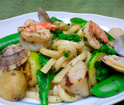

魚介と春野菜たっぷりの
焼きうどん
焼きうどん
- 調理時間：30 分
- （一人当たり）
- カロリー：322kcal
- たんぱく質：18.5g
- 脂質：7.4g
- 塩分：2.8g


＜４人分＞
- ゆでうどん
- ４玉
- 菜の花
- ８０ｇ
- スナップえんどう
- ８本
- 芽キャベツ
- ６個
- 小カブ
- ４個
- 新じゃがいも
- １２０ｇ
- ホタテ
- １００ｇ
- エビ
- ８尾
- アサリ
- ２００ｇ
- 塩
- 適量
- コショウ
- 少々
- 醤油
- 少々
- パセリのみじん切り
- 適宜
- 植物油
- 適量


- パセリ以外の野菜類は全て、食べやすい大きさに切って、下ゆでする。
- アサリは、こすり合わせてよく洗い、エビは殻をむく。ホタテは食べやすい大きさに切る。
- 熱したフライパンに、油を入れ、アサリ、エビ、ホタテを中火で炒め、アサリの殻が開いたら、①の野菜類を加えてさらに炒める。
- ゆでうどんは、湯で洗いほぐした後（または、電子レンジで加熱する）、③に加えて炒める。
- 全体に火が通ったら、塩、コショウで味をととのえ、最後に鍋肌から醤油を加える。
仕上げにパセリのみじん切りを加えてサッと混ぜ合わせる。
魚介と春野菜たっぷりの焼きうどん
子どもたちが春休みになるこの季節、「昼ごはんは簡単にすませたい。」「でも、栄養バランスのとれたものを･･･。」という母心が交錯するのもまた事実。
ササッと簡単にできる焼きそばや焼うどんも、具沢山にすれば健康レシピになりますし、旬の食材を加えればとても素敵に仕上がります。レシピでは、春が旬の緑の野菜類とエビや貝など、シーフード使用しました。
貝類には、旨味成分であるグリコーゲンが多く、そのグリコーゲンは肝臓の機能を強化する働きがあります。また、吸収率の良いアミノ酸も豊富で肝臓を病みやすい春の体に効果的にはたらきます。他にも、コレステロールを下げる働きのタウリン、貧血予防に効果的な鉄とビタミンB12、酵素やホルモンの成分として重要な亜鉛などが豊富です。
麺類は、ツルツルと早食いになってしまうのですが、具沢山にすると噛む回数がふえ、食べ過ぎを防ぎます。育ち盛りの子どもたちだけでなく、生活習慣病予防のお父さんにもぜひ。